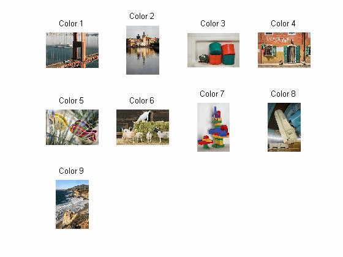

| DiscreteWavelets Toolbox |
Thumbnails of included image files
ShowThumbnails()
ShowThumbnails(options)
ShowThumbnails() produces two images. One image shows thumbnail images of all grayscale images included with the DiscreteWavelets Toolbox while the other displays thumbnail images of all grayscale images included with the DiscreteWavelets Toolbox. ImageList('ImageType',value) lets you specify whether you wish to see thumbnails for grayscale images (set value to 'GrayScale')or color images (set value to 'Color').
Here are thumbnail images for all color images included in the DiscreteWavelets toolbox.
ShowThumbnails('ImageType','Color')

ImageList, ImageNames, ImagePlot ImageRead
© 2007-2008 Patrick Van Fleet